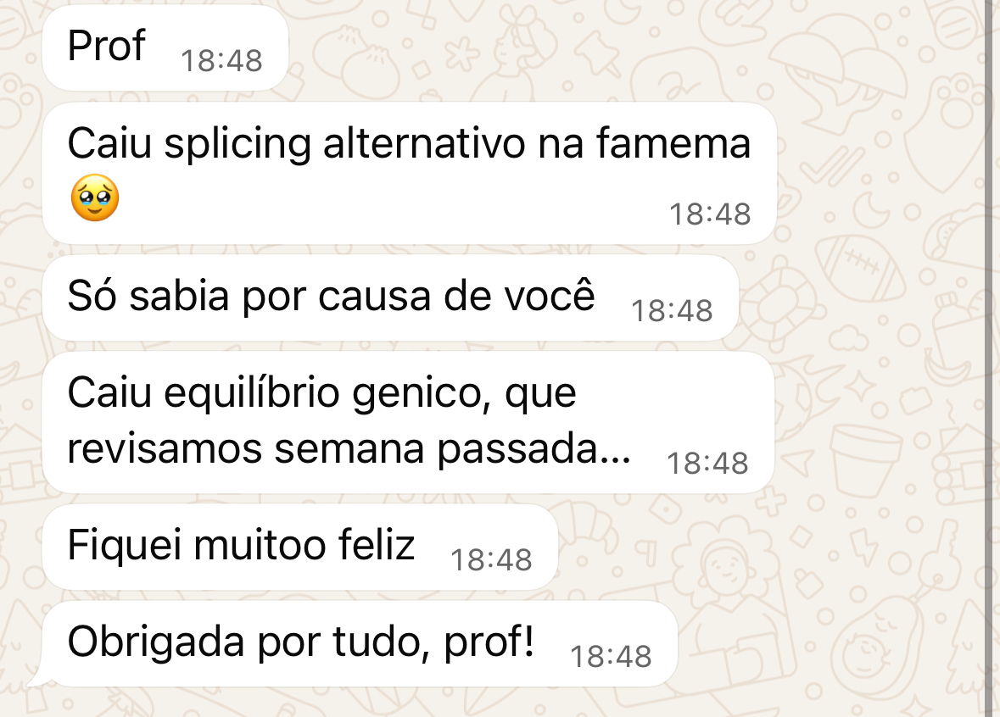
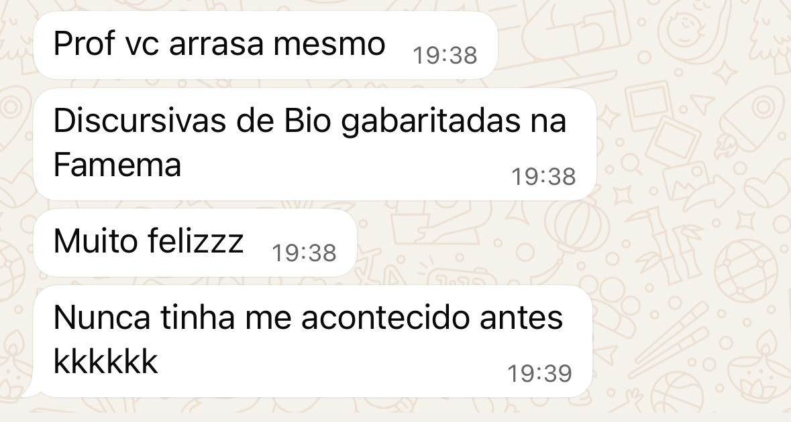
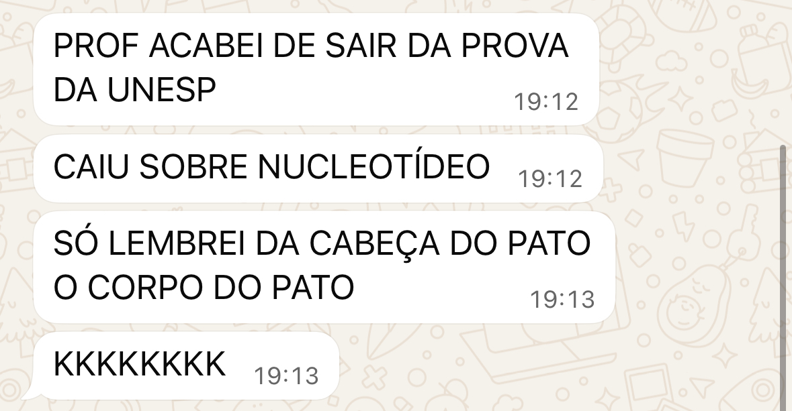
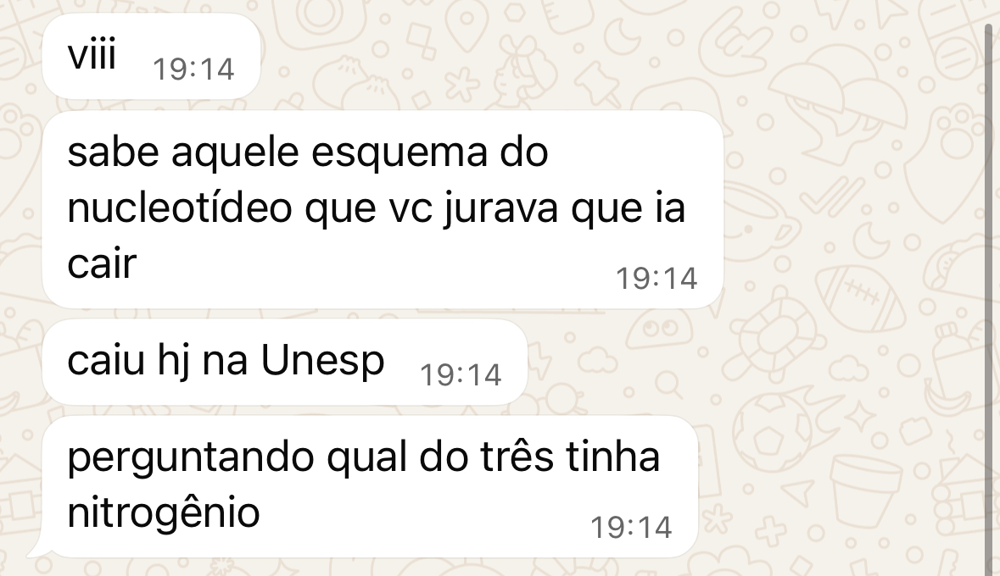

Missão Fecha Bio
Para vestibulandos que estudaram Biologia durante o ano… mas chegam à reta final com a sensação de que esqueceram metade de tudo.
Você já estudou. Já assistiu aula. Já fez resumo. Já resolveu questão. Já salvou PDF. Já abriu vídeo no YouTube às 23h47 porque lembrou, do nada, que talvez não saiba Botânica.
E mesmo depois de tudo isso, existe uma frase insistindo dentro da sua cabeça: "Parece que ainda falta tudo."
Esse é o problema. Não necessariamente falta conteúdo. Pode estar faltando fechamento.

O aluno central do Bio em Casa não é quem nunca viu Biologia. É justamente quem já teve contato com boa parte da matéria, mas não confia plenamente no que consegue recuperar e usar quando a questão aparece.
Você passou o ano abrindo conteúdos.
Agora é hora de fechar.
Porque quanto mais perto do ENEM você chega, menos sentido faz continuar estudando como se o ano estivesse começando.
Mais uma aula aleatória. Mais um PDF. Mais um resumo. Mais uma playlist. Mais uma aba aberta.
Isso não é necessariamente preparação. Às vezes, é apenas caos com aparência de estudo.
O Revisão ENEM do Bio em Casa foi criado para fazer o movimento contrário: parar de acumular Biologia e começar a organizar aquilo que precisa estar disponível quando a prova exigir.
É por isso que posicionamos essa experiência não como "mais um curso de revisão", mas como um sistema de fechamento da Biologia para a reta final do ENEM.
Por que criei a Missão Fecha Bio?
Porque existe uma diferença brutal entre:
Você pode reconhecer mitose quando vê no resumo. Pode lembrar de mitocôndria quando o professor fala. Pode entender Genética durante a aula.
E mesmo assim chegar à questão e pensar: "Eu sabia isso… mas não consegui fazer."
Reconhecer não é dominar. Entender enquanto alguém explica não significa conseguir recuperar sozinho.
E recuperar uma informação isolada ainda não significa saber conectá-la quando o ENEM mistura gráfico, experimento, fisiologia, ecologia, genética ou interpretação na mesma questão.
A Missão Fecha Bio existe para reduzir essa distância. Não foi criada para jogar mais informação dentro da sua cabeça. Foi criada para ajudar você a transformar conhecimento fragmentado em conhecimento:
organizado → conectado → recuperável → aplicável.
Para o aluno que olha para Biologia e pensa:
"Eu já vi isso, mas não lembro."
"Não sei por onde começar a revisar."
"Toda vez que reviso uma coisa lembro de outra que esqueci."
"Quando vejo o gabarito parece óbvio."
"Eu entendo a matéria, mas a questão me desmonta."
"Tenho conteúdo demais e tempo de menos."
"Só quero chegar na prova sabendo que fiz minha parte."
Essa é exatamente a situação psicológica mais aderente ao produto: o estudante que já construiu conhecimento, mas chega à reta final com lacunas, fragmentação e insegurança sobre aquilo que realmente consegue mobilizar.
Ela ataca aquilo que chamamos de:
Dilema da Biologia Aberta
Você estuda, estuda, estuda… e nunca sente que terminou.
O ENEM, porém, tem uma característica inconveniente: ele não espera você terminar de consumir a internet.
A prova tem data. O conteúdo não tem fim.
Por isso a pergunta da reta final não deveria ser: "O que mais eu posso começar?" Deveria ser:
"O que eu ainda preciso fechar?"
Essa mudança de mentalidade é o coração do posicionamento do Revisão ENEM.
Através do Método BC
Um sistema de aprendizagem baseado em quatro movimentos:
Estruturar
Onde isso se encaixa?
Você começa a enxergar a arquitetura da Biologia em vez de centenas de informações soltas.
Conectar
Como isso funciona?
Você deixa de decorar conceitos isolados e começa a entender relações entre componentes, processos, causas e consequências.
Consolidar
Eu realmente aprendi?
Você testa recuperação, identifica lacunas e transforma erro em diagnóstico.
Aplicar
Consigo usar?
Você leva o conhecimento para questões e aprende a construir o raciocínio quando o contexto muda.
Na linguagem mais simples possível:
Esse é o mecanismo central do Método BC.
Se você se identificou, aqui está o que te espera dentro da Missão Fecha Bio
O que você recebe
11 aulões estratégicos de revisão
Você percorre uma rota ampla pelas principais áreas da Biologia:
Introdução ao Método BC e Matriz de Referência, Bioquímica, Biologia Celular, Genética, Evolução, Classificação/Embriologia/Histologia, Zoologia, Botânica, Fisiologia, Ecologia e Microbiologia.
Mas existe uma diferença. Você não vai tratar essas áreas como onze gavetas isoladas.
O objetivo do Método BC é justamente mostrar como uma parte conversa com a outra.
Aulas ao vivo + gravações
Os encontros acontecem ao vivo e também ficam disponíveis em gravação durante o período de acesso.
Isso permite participar da experiência em tempo real e voltar aos pontos necessários quando uma lacuna aparecer.
Você não precisa depender de memória perfeita. Precisa de uma rota que possa ser revisitada estrategicamente.
Guias de acompanhamento ativo
Nada de sentar, apertar play e virar decoração na frente da tela.
Os materiais são pensados para que você acompanhe a aula preenchendo lacunas, esquemas e mapas.
Menos espectador. Mais participante.
Porque assistir aula não é sinônimo de aprender. E reconhecer a resposta quando ela aparece não é a mesma coisa que conseguir construí-la sozinho.
Mapas mentais
Os mapas ajudam a enxergar a estrutura dos conteúdos e suas relações.
O objetivo não é produzir mais uma folha bonita para você salvar no celular. É ajudar seu cérebro a entender:
onde cada conhecimento mora e com quais outros conhecimentos ele conversa.
Listas de exercícios
As questões não aparecem apenas para você descobrir quantas acertou. Elas funcionam como ferramenta de diagnóstico.
Você errou? A pergunta não termina em: "Qual era a alternativa certa?"
Ela continua: Onde eu travei? Qual conceito faltou? Qual conexão eu não fiz? Em que ponto meu raciocínio desviou?
É assim que erro deixa de ser sentença e vira informação.
Questões do próprio ENEM
As questões atualmente utilizadas no programa vêm do ENEM e são relacionadas à estrutura de competências e habilidades da prova.
A ideia é conectar: conteúdo + habilidade exigida + maneira como o ENEM cobra.
Você não estuda Biologia num vácuo. Você estuda para mobilizar Biologia diante de uma prova real.
Análise de incidência e matriz
Em vez de caminhar completamente no escuro, a revisão considera a estrutura da própria prova.
Isso ajuda a transformar "tenho que revisar Biologia inteira" em uma visão mais organizada do território que será percorrido.
Suporte direto com o professor Vitor
O acesso atual prevê suporte via WhatsApp diretamente com o professor Vitor, 24 horas por dia, 7 dias por semana.
E o objetivo não é simplesmente mandar "Professor, qual é a alternativa certa?" É poder investigar:
Onde eu errei? Que conexão faltou? Qual conceito eu preciso reconstruir?
O suporte deixa de ser apenas tira-dúvidas. Ele passa a fazer parte do diagnóstico.
3 meses de acesso
Seu acesso começa imediatamente após a compra e permanece disponível por 3 meses.
Tempo para percorrer a revisão, revisitar os pontos necessários e usar seus próprios erros para decidir onde concentrar esforço.
Só o essencial para transformar revisão em fechamento.
Nada de uma biblioteca infinita feita para impressionar você na página de vendas e assombrá-lo depois da compra.
A métrica não é: "Quantas horas existem dentro da plataforma?"
A métrica é:
"Essa Biologia começou a fazer sentido?"
Porque o objetivo não é assistir mais. É conseguir usar melhor aquilo que você estudou.
Linha do tempo
Primeiras 24 horas
Seu acesso é liberado.
Você conhece a lógica do Método BC e começa a sair da sensação genérica de "Tenho que revisar tudo" para uma visão mais estruturada da sua revisão.
Primeiras 72 horas
Você já pode começar a trocar consumo passivo por diagnóstico.
A pergunta deixa de ser apenas "Eu já vi essa matéria?" e começa a virar "Eu consigo recuperar? Relacionar? Aplicar?"
Primeiros 30 dias
Conforme avança pela rota, a tendência é começar a visualizar com mais clareza: o que já foi revisado; onde existem lacunas; quais relações ainda não estão sólidas; e quais áreas merecem uma nova rodada de atenção.
Não é sobre sentir que sabe absolutamente tudo. É sobre parar de estudar completamente no escuro.
Ao longo dos 3 meses de acesso
A meta é sair progressivamente de "Tomara que eu lembre" para "Sei como construir o caminho."
De conteúdo fragmentado para Biologia conectada. De caos para clareza. De aba aberta para:
✓ Fechado.
Para quem é a Missão Fecha Bio
Para quem é
Para quem não é
O Bio em Casa não promete que você vai lembrar absolutamente tudo, acertar todas as questões ou garantir aprovação. O posicionamento do produto rejeita deliberadamente essas promessas frágeis.
O que chega depois da prova.
Mensagens que alunos mandaram no WhatsApp saindo da prova.




 Investimento
Investimento
Do conteúdo espalhado à Biologia conectada.
6x R$49,50
ou R$297 à vista no Pix ou boleto
Acesso imediato após a confirmação do pagamento. 3 meses de acesso.
Depois desse prazo, a turma fecha e a rota recomeça só na próxima temporada de revisão.
Você já abriu conteúdo suficiente.
Próximos passos
Você decide que não vai carregar Biologia como uma aba aberta até o ENEM. Entra para a Missão Fecha Bio. Recebe seu acesso. Começa a percorrer a rota.
Identifica lacunas. Reconecta conteúdos. Testa o que realmente consegue recuperar. Corrige o que ainda precisa ser corrigido.
E segue para a prova com uma preparação mais organizada do que aquela montanha de PDFs, vídeos e capítulos soltos que você vinha carregando.
Pare de começar. Comece a fechar.
Quero entrar na Missão Fecha Bio Bio em Casa — com Vitor Hugo Rocha · Biologia não se decora. Se conecta.Você não precisa chegar ao ENEM acreditando que sabe 100% de toda a Biologia.
Precisa chegar sabendo que percorreu sua rota, encontrou suas lacunas e trabalhou aquilo que estava ao seu alcance.
Você passou o ano abrindo. Agora é hora de fechar.
Talvez o maior diferencial dessa revisão nem sejam os 11 aulões.
É aprender a olhar para uma questão errada e parar de pensar "Sou ruim nisso" para começar a perguntar "Onde exatamente meu raciocínio quebrou?"
Porque quando você sabe diagnosticar o erro, ele deixa de ser apenas um problema. Ele vira o próximo passo.